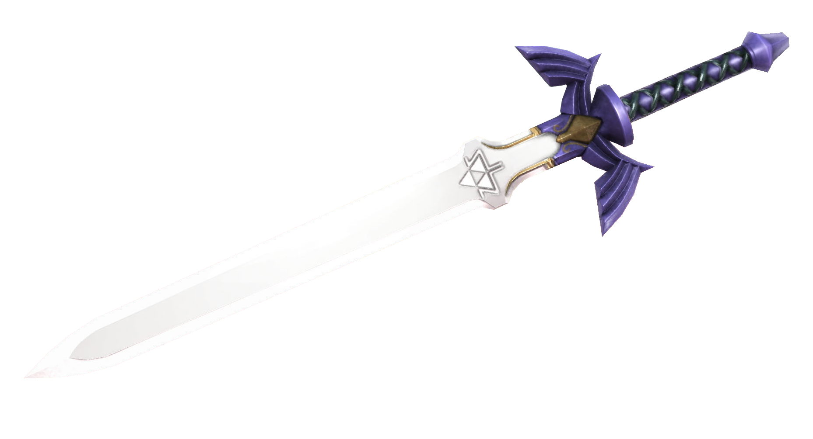
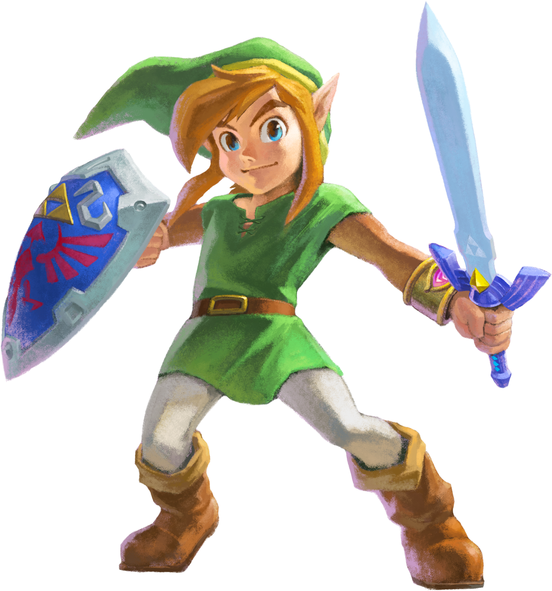
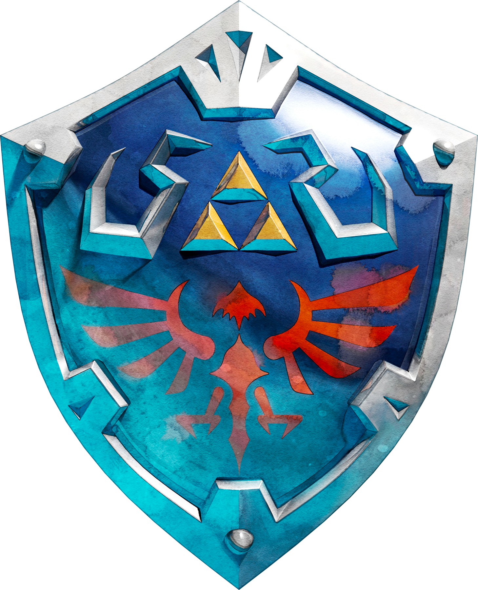
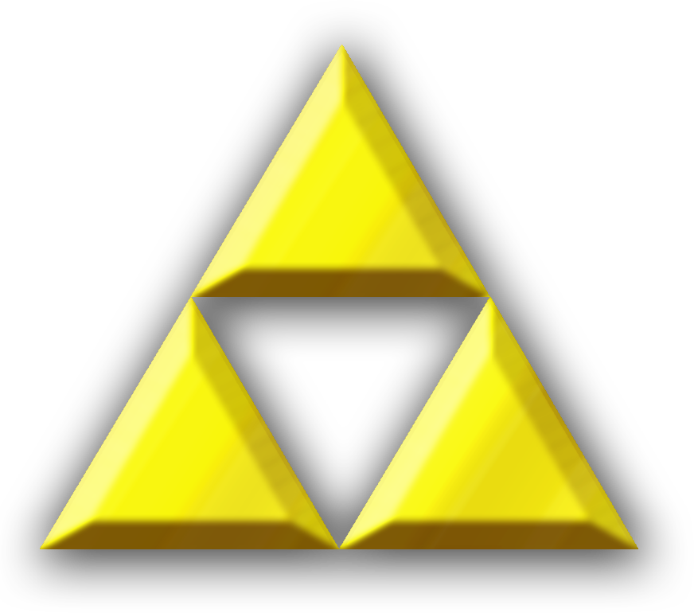
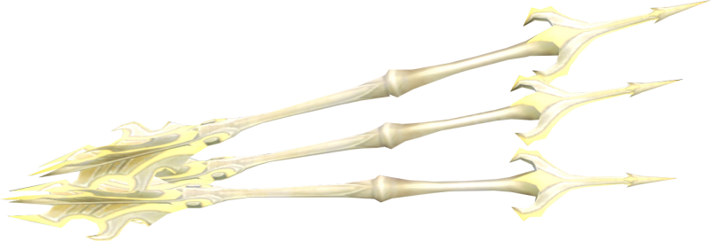

Iconic Items
These are some of the most iconic items that exist in the Legend of Zelda series. The hero uses these items to overcome challanges and defeat evil.

Master Sword
The Master Sword, also known as the Blade of Evil's Bane, Sword of Resurrection and the sword thats seals the darkness, is a recurring legendary Sword in the Zelda series.

Green Tunic
The Green Tunic is the default type of clothing worn by Link throughout the majority of each of his adventures. Because of this, it has become a symbol of the hero who saved Hyrule from evil.

Hylian Shield
The Hylian Shield is a recurring Shield in The Legend of Zelda series. It is the traditional Shield bore by the Knights of Hyrule and is commonly used by Link in 3D Zelda games.

Triforce
The Triforce is a sacred golden relic left behind by the Golden Goddesses, Din, Nayru, and Farore, once they finished creating the realm, which came to be known as Hyrule.

Light Arrows
The Light Arrows, also known as the Arrows of Light and the Lights of Justice, are a recurring upgrade to Link's Arrows in The Legend of Zelda series.

Rupee
Rupees are the unit of currency within most of The Legend of Zelda series, in circulation in the lands of Hyrule.